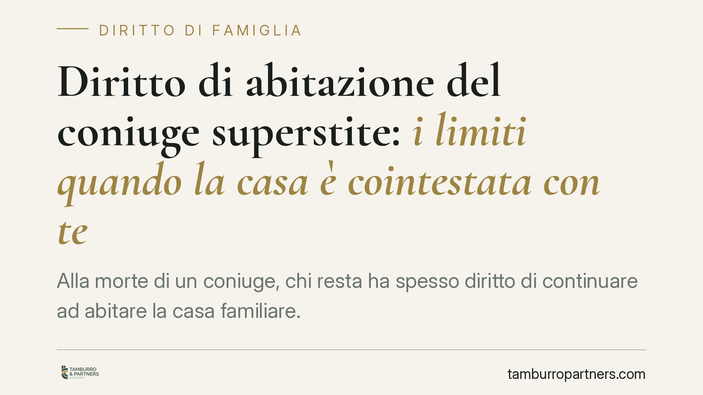

Diritto di abitazione del coniuge superstite: i limiti quando la casa è cointestata con terzi
Alla morte di un coniuge, chi resta ha spesso diritto di continuare ad abitare la casa familiare. Ma questo diritto non è assoluto: la Cassazione ha chiarito che, se l'immobile è cointestato con un soggetto estraneo alla coppia, il diritto di abitazione non sorge. Una distinzione che pesa su successioni, convivenze e patrimoni ricostituiti dopo un divorzio.

Il caso: casa cointestata con l'ex e coniuge superstite
La domanda è più frequente di quanto si pensi. Un uomo acquista una casa insieme alla prima moglie. Divorziano, ma la comproprietà dell'immobile resta. L'uomo si risposa e va a vivere altrove, oppure nella stessa casa con la nuova moglie. Alla sua morte, la seconda moglie può continuare ad abitare quell'immobile invocando il diritto di abitazione del coniuge superstite?
La risposta, secondo la giurisprudenza di legittimità, è negativa. E il motivo sta tutto nella struttura della norma.
Inquadramento normativo: l'art. 540 del codice civile
Il diritto di abitazione del coniuge superstite è previsto dall'art. 540, secondo comma, del codice civile. La norma riconosce al coniuge sopravvissuto il diritto di abitare la casa adibita a residenza familiare e di usare i mobili che la corredano, purché ricorra una condizione precisa: l'immobile deve essere di proprietà del defunto o comune tra i coniugi.
È questo il punto decisivo. Il legislatore ha delimitato il diritto a due sole ipotesi: la proprietà esclusiva del coniuge deceduto oppure la comunione tra i due coniugi (quelli del matrimonio in corso al momento del decesso). Nessuna terza via.
La Corte di cassazione ha confermato questa lettura restrittiva. Quando l'immobile è in comproprietà con un soggetto terzo — ad esempio l'ex coniuge del defunto — la casa non è né di proprietà esclusiva del defunto né in comunione con il coniuge superstite. Manca quindi il presupposto oggettivo, e il diritto di abitazione semplicemente non nasce.
La ragione è coerente con la funzione dell'istituto: il diritto di abitazione è un peso che grava sull'eredità e sui coeredi, non su patrimoni di persone estranee alla vicenda successoria. Imporre a un terzo comproprietario di subire l'abitazione della vedova o del vedovo del suo ex coniuge significherebbe far ricadere su di lui un onere che la legge non prevede.
Implicazioni pratiche: chi rischia di restare senza tutela
La conseguenza è netta. Il coniuge superstite che confidava di poter restare nella casa familiare può trovarsi privo di ogni diritto se scopre che quell'immobile è cointestato con l'ex coniuge del defunto o con altri soggetti.
Questo scenario colpisce soprattutto le famiglie ricostituite. Chi si risposa dopo un divorzio spesso non regolarizza la sorte degli immobili acquistati nel primo matrimonio. La comproprietà con l'ex sopravvive alla separazione e al nuovo matrimonio, ma resta invisibile fino al momento della successione.
Attenzione a un ulteriore effetto: l'assenza del diritto di abitazione non priva il coniuge superstite della sua quota di eredità sui beni del defunto, compresa la quota dell'immobile che apparteneva al deceduto. Ma quota ereditaria e diritto di abitazione sono cose diverse. Ereditare una parte della casa non equivale a poterci vivere in via esclusiva: il comproprietario terzo conserva i suoi poteri sul bene.
Si crea così una situazione di comunione forzata, spesso conflittuale, che può sfociare in una richiesta di divisione o di vendita dell'immobile.
Cosa fare in concreto
- Verificate la titolarità degli immobili prima di ogni pianificazione successoria. Recuperate le visure catastali e gli atti di provenienza: sapere chi è comproprietario è il primo passo.
- Se esiste una comproprietà con un ex coniuge, valutate lo scioglimento. La vendita della quota, la permuta o l'acquisto della parte dell'ex eliminano il problema alla radice.
- Considerate strumenti di tutela alternativi. Testamento, patti di famiglia o attribuzioni specifiche possono proteggere il coniuge superstite dove l'art. 540 non arriva.
- Non date per scontato il diritto di abitazione. In presenza di famiglie ricostituite, consigliamo una verifica preventiva con un professionista prima che la successione si apra.
- In caso di successione già aperta, agite tempestivamente. I rapporti con il comproprietario terzo vanno gestiti con attenzione per evitare divisioni giudiziali costose e prolungate.
Disclaimer
Contributo informativo a cura di Tamburro & Partners - Avv. Giuseppe Tamburro. Non costituisce parere legale.
Ogni famiglia ha il suo equilibrio.
Separazione, divorzio, affidamento, assegno: se vuoi un confronto riservato su una specifica situazione, scrivi allo studio. Ti rispondiamo entro un giorno lavorativo.